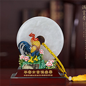

<!--
  Generated template for the NewsListPage page.

  See http://ionicframework.com/docs/components/#navigation for more info on
  Ionic pages and navigation.
-->
<ion-header>

  <ion-navbar>
    <ion-title>newsList</ion-title>
  </ion-navbar>

</ion-header>

<ion-content>
  <ul class="news-list">
    <li>
      <h2 class="title">我是头条标题我要上头条我要努力争取一次</h2>
      <p class="detail">唐朝头条，我是美丽摘要。唐朝头条，我是引人摘要。唐朝头条，我是简要摘要。</p>
    </li>
    <li>
      <h2 class="title">我是头条标题我要上头条我要努力争取一次</h2>
      <p class="detail">唐朝头条，我是美丽摘要。唐朝头条，我是引人摘要。唐朝头条，我是简要摘要。</p>
    </li>
    <li>
      <h2 class="title">我是头条标题我要上头条我要努力争取一次</h2>
      <p class="detail">唐朝头条，我是美丽摘要。唐朝头条，我是引人摘要。唐朝头条，我是简要摘要。</p>
    </li>
    <li>
      <h2 class="title">我是头条标题我要上头条我要努力争取一次</h2>
      <p class="detail">唐朝头条，我是美丽摘要。唐朝头条，我是引人摘要。唐朝头条，我是简要摘要。</p>
    </li>
  </ul>
</ion-content>

